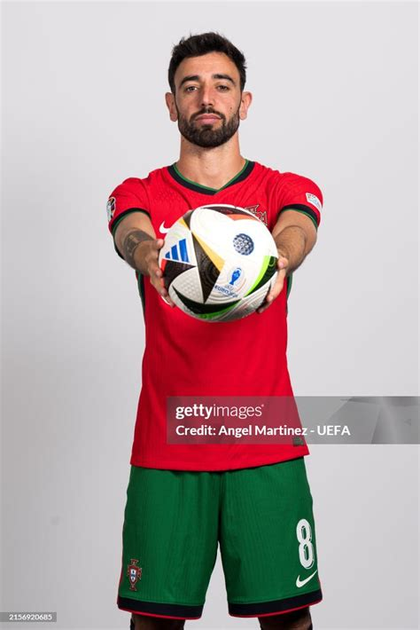

Bruno Fernandes
Datos interesantes
Jugador clave en el mediocampo. Creativo, técnico y con gran visión de juego.
Características
- Pases precisos
- Tiros lejanos
- Penalti seguro
- Visión táctica
Logros
- Liga portuguesa
- Jugador del mes Premier
- Máximo asistidor del equipo
- Títulos con Manchester